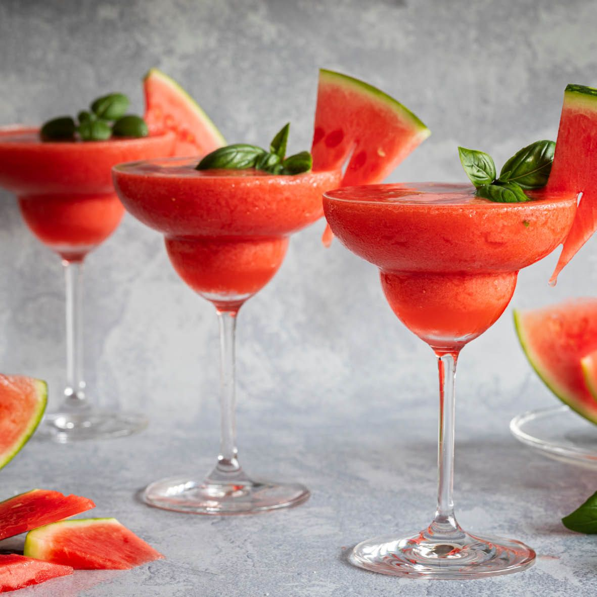

Frozen Watermelon Margaritas

Description
This melon drink is cool and refreshing. Because of the watermelon's natural sweetness,
we can keep the added sugar low and not feel guilty about drinking them! (maybe a little)
Prep Time: 25 Min Total Time: 9.5 Hours Servings: 4 Margaritas
Ingredients
- 1 Cup Water
- 1 1/2 Cup White Sugar
- 1 1/2 Teaspoons Chopped Rosemary or Basil
- 6 Cups Cubed Seeded Watermelon
- 1 Cup Lemon Juice
- 1 Tablespoon Kosher Salt
- 1 Tablespoon White Sugar
- 8 Fluid Ounces Tequila of Choice
- Rosemary or Basil for Serving
- Watermelon Wedges for Serving
Directions
- Bring 1 cup water and 1/3 cup sugar to a boil in a small saucepan, stirring occasionally to dissolve sugar. Stir in chopped rosemary or basil. Let steep for 1 hour.
- Strain rosemary or basil syrup into a blender. Add watermelon and lemon juice. Purée until smooth, about 30 seconds. Strain lemonade mixture, then freeze in ice cube trays until solid, about 8 hours or overnight.
- Mix together salt and remaining 1 tablespoon sugar in a small shallow dish. Lightly dampen rims of 4 (12-ounce) glasses with a wet paper towel. Roll glass rims in salt-sugar mixture until coated.
- Working in batches, blend half of the frozen watermelon-lemonade cubes and 4 ounces tequila in a blender or food processor until slushy, adding 1 to 2 tablespoons of water as needed to help blend mixture. Pour into prepared glasses. Repeat with remaining watermelon-lemonade cubes and remaining tequila. Garnish with rosemary or basil, and watermelon wedges.